Bar · rue des Postes · Lille
Lokarria
Cosy, inclusif et en musiqueUn papier peint orange des années 70, des photos aux murs, de petits monstres dessinés sur les tables. On y vient pour une bière, un cocktail ou un verre sans alcool, une planche à partager, et souvent pour les platines ou un concert.
Ouvert tous les jours · jusqu'à 2 h du jeudi au samedi
- Ouvert 7 jours sur 7
- Une terrasse
- Platines et concerts
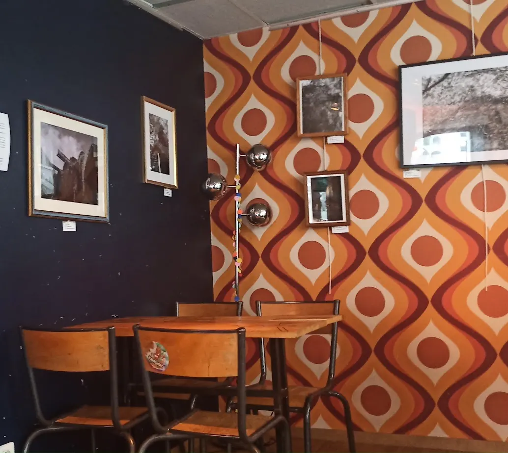
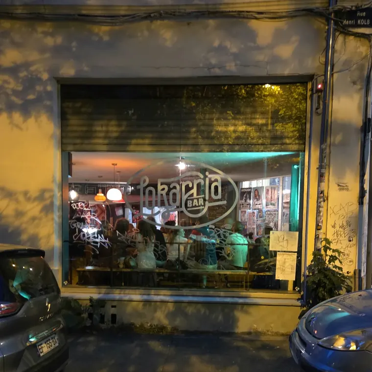
À boire
Une carte où il y en a pour tous les goûts
Des bières dans leurs verres, comme celles du Brussels Beer Project ou la Cuvée des Trolls, des cocktails, des boissons avec ou sans alcool, et quelques cacahuètes pour accompagner. Les clients saluent le choix, et des serveuses de bon conseil.
- Bières
- Cocktails
- Sans alcool
- À grignoter
Les boissons montrées ici sont celles des photos prises au bar par les clients. La carte du moment se lit au comptoir.
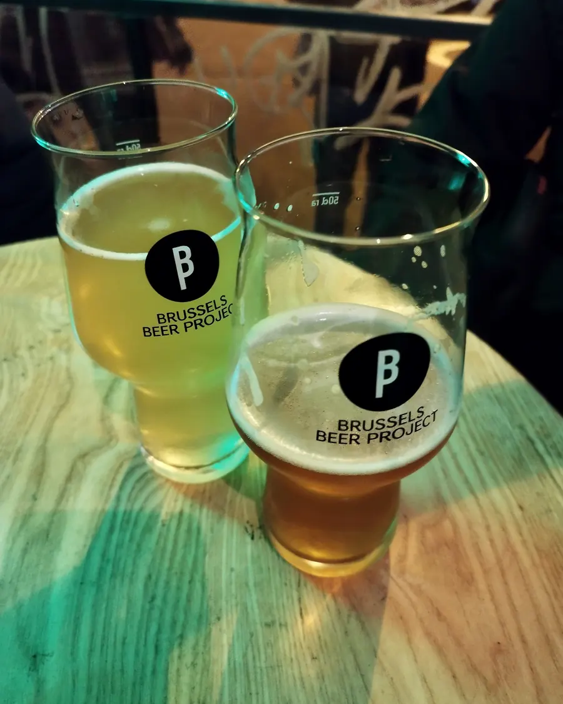
Brussels Beer Project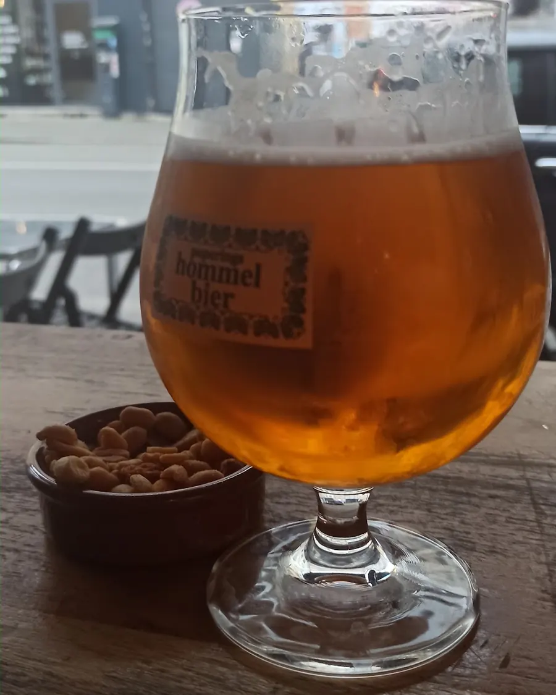
Une ambrée, des cacahuètes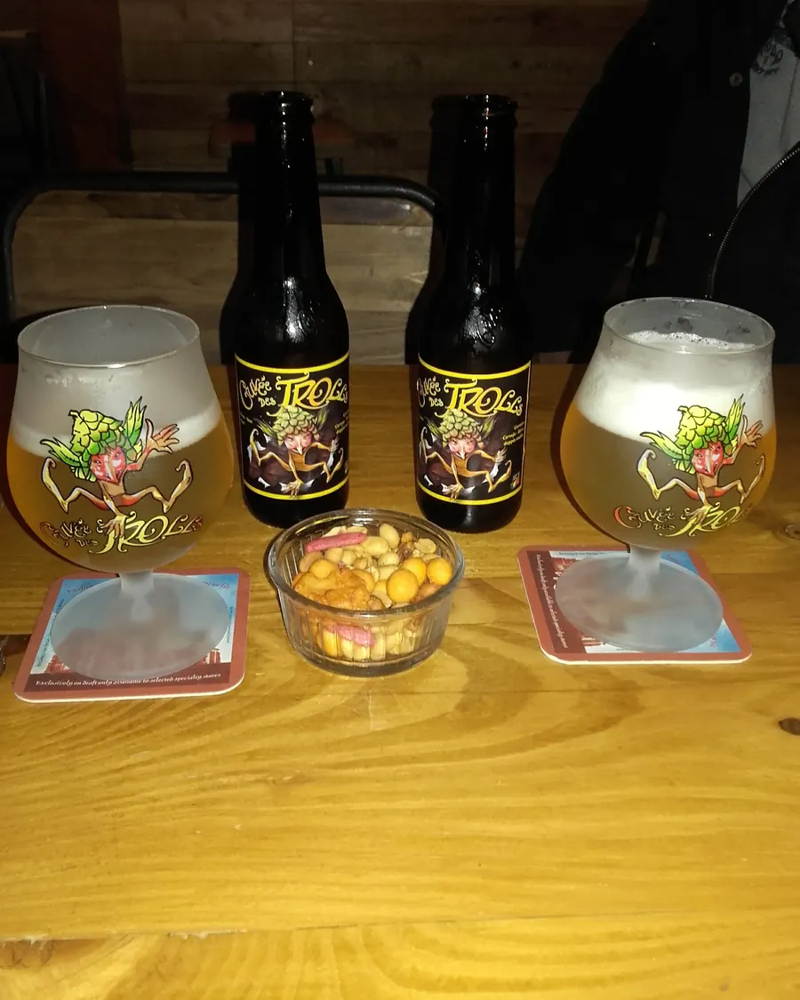
Cuvée des Trolls, en bouteille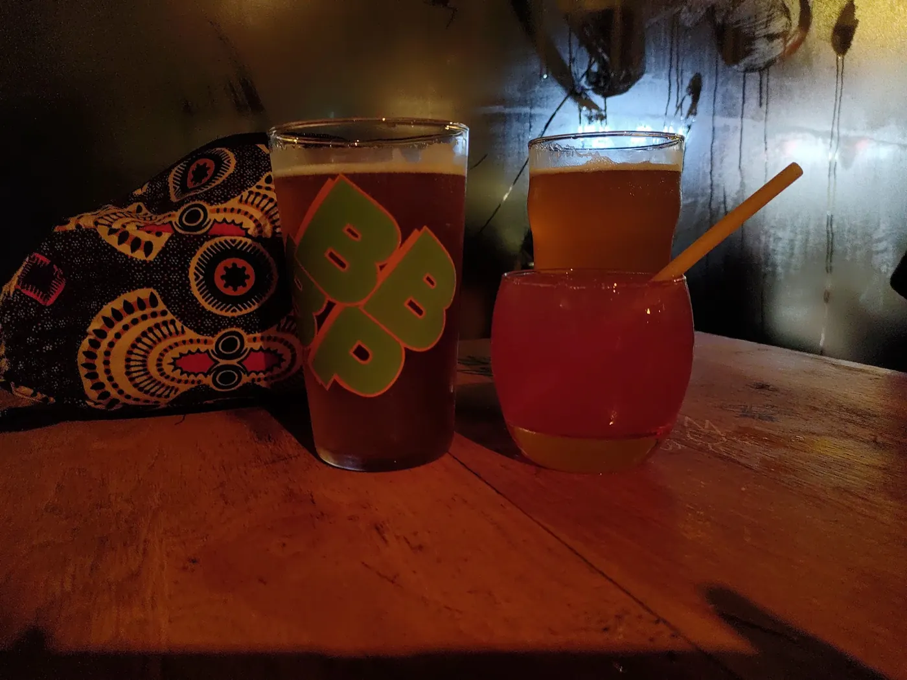
Une pinte et un cocktailFaites glisser pour voir les verres
Le lieu
Papier peint seventies et petits monstres sur les tables
Un mur bleu nuit et un papier peint orange aux grands motifs ronds, où sont accrochées des photos encadrées. Des tables en bois couvertes de petites créatures dessinées au feutre, une porte recouverte de tags et d'autocollants, un comptoir en bois clair sous des suspensions en métal. Et dehors, l'enseigne allumée et la terrasse.
« Le Lokaria, c'est le genre de bar où l'on se sent bien dès la porte franchie ! 🌈 […] »Nazim K., avis Google
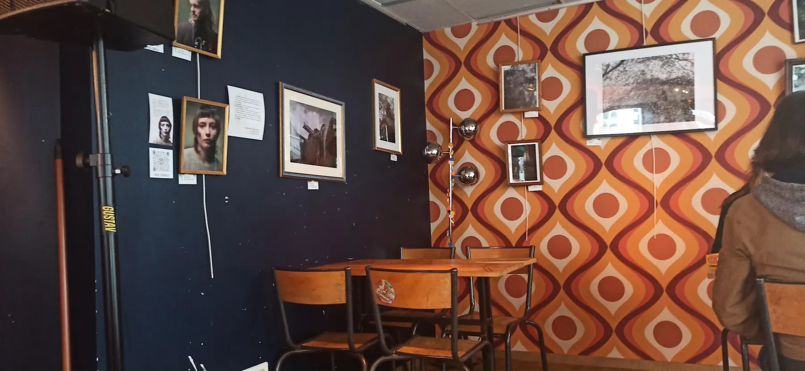
Photos aux murs, papier peint seventies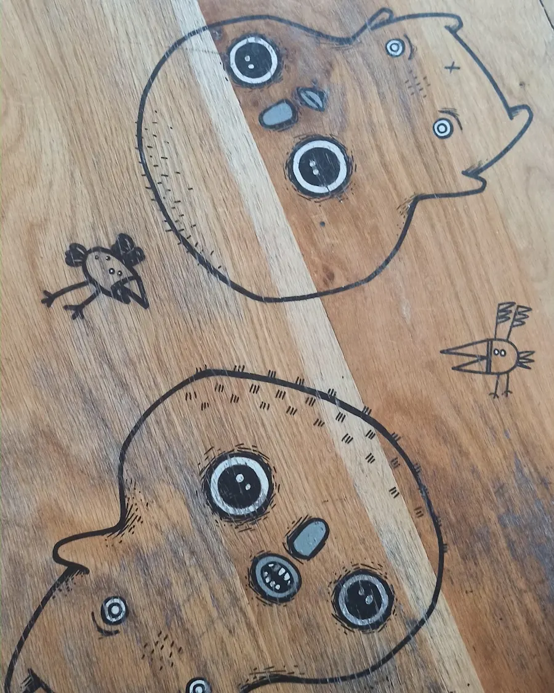
Les tables dessinées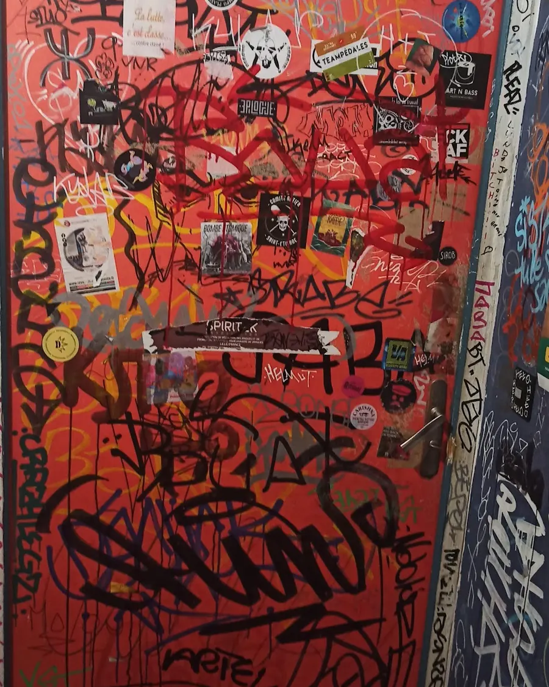
La porte aux autocollants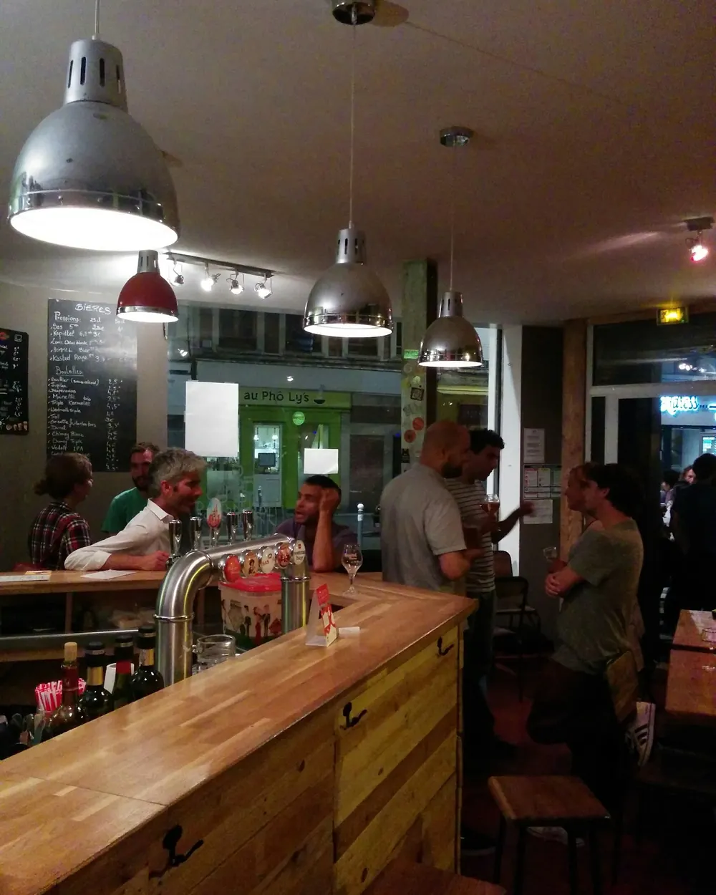
Le comptoir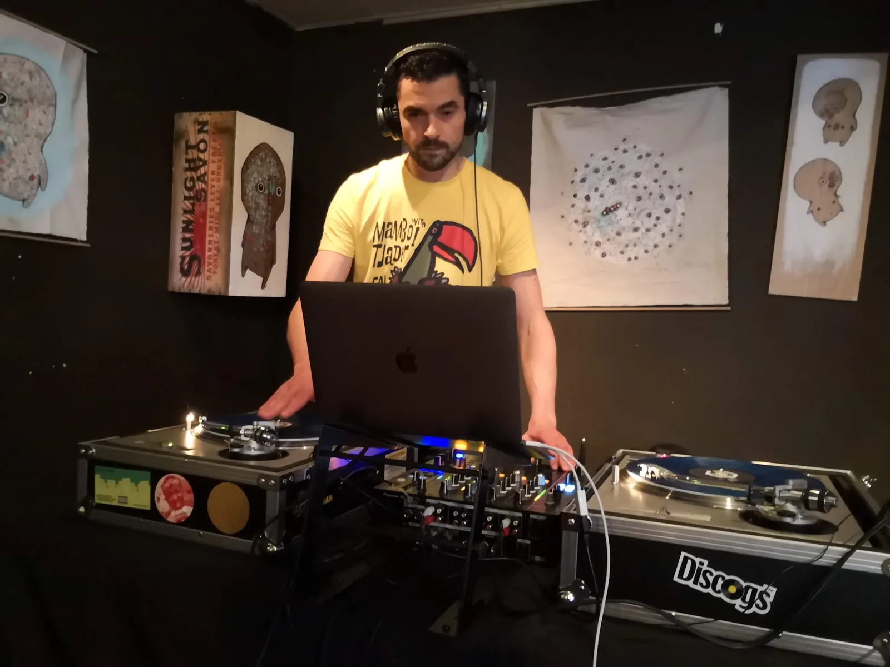
Aux platines, vinylesLes soirées
Une programmation ouverte et engagée
Certains soirs, un DJ s'installe aux platines vinyles devant des illustrations qui rappellent les dessins des tables. D'autres soirs, ce sont des concerts. Et dès qu'on pousse la porte, la musique met dans l'ambiance.
- Des platinesVinyles et table de mixage, au fond de la salle.
- Des concertsLes avis parlent de soirées avec des concerts.
- Des images aux mursPhotos encadrées dans la salle, illustrations près des platines.
« Super bar et super ambiance. Une programmation ouverte et engagée et une vraie connexion avec les clients ! ♥️ »Hervé, avis Google
Réserver
Un afterwork, un anniversaire : la table vous attend
Choisissez le jour, l'heure et le nombre de personnes. Pour la bande, un pot de départ ou un soir de concert, la table est gardée d'avance.
Avis
« Superbe ambiance »
Ce que les clients écrivent sur Google après un verre au Lokarria.
Horaires et accès
Ouvert tous les jours, jusqu'à 2 h en fin de semaine
| lundi | 17 h – 1 h |
|---|---|
| mardi | 14 h – 1 h |
| mercredi | 14 h – 1 h |
| jeudi | 14 h – 2 h |
| vendredi | 14 h – 2 h |
| samedi | 14 h – 2 h |
| dimanche | 17 h – 1 h |
Les heures après minuit comptent pour la soirée de la veille.
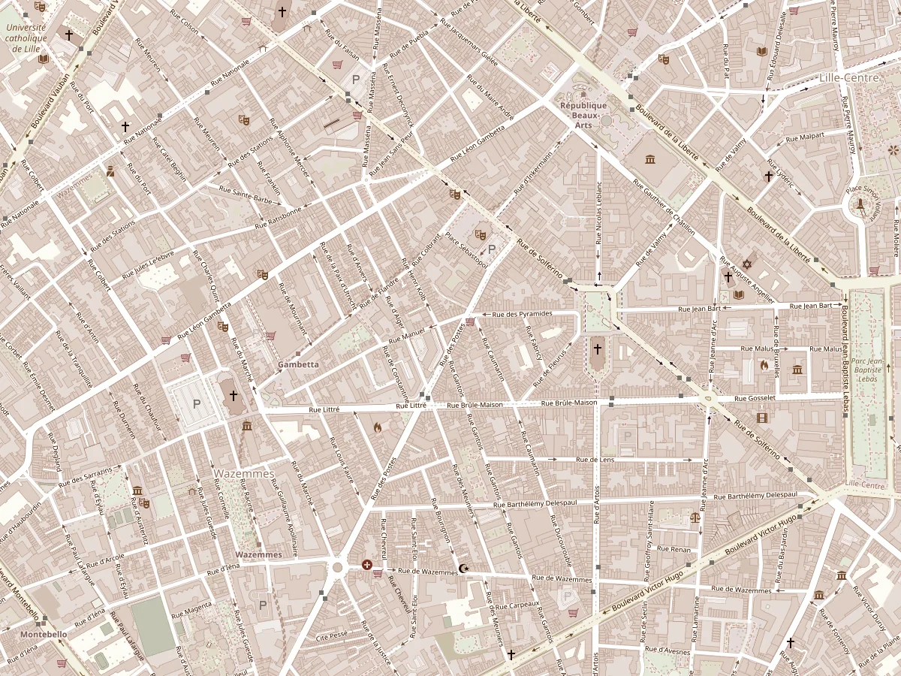
Itinéraire © OpenStreetMapBienvenue à toutes et tous
« […] Un lieu LGBT friendly, chaleureux et bienveillant… […] », écrit Nazim K. sur Google.
Une question ?
Un groupe, un anniversaire : 03 62 64 55 43 ou par e-mail.